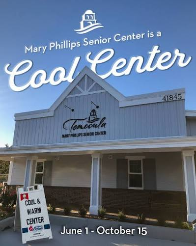

Zacarias Rodriguez
I am Zacarias Rodriguez, a Political Science and Public Service student at UC Riverside. I come from Temecula, California, where school and community experiences shaped me. I care about fairness, respect, and making sure people have a voice. To me, humanity means more than just thinking about ourselves. It means looking at the problems around us and asking what we can do to make things better. I have always believed that small actions can create real positive change. Volunteering at community events, including activities connected to the Mary Phillips Senior Center and the Special Olympics, taught me how important patience, teamwork, and compassion are. These experiences showed me that helping others is not just something to put on a résumé. It is a responsibility that can make a difference in someone's life. I try to bring that same mindset into my education, friendships, and everyday decisions.
Outside of school, I enjoy gaming, technology, reading manga, and video editing. I like strategy and multiplayer games because they challenge me to think quickly, communicate with others, and adapt when things do not go as planned. Games such as Overwatch, Marvel Rivals, Deadlock, and Valorant have also given me opportunities to connect with people who share my interests. Video editing is another important part of who I am. Over the past few years, I have worked on gaming montages, fandubs, and video essays. Editing gives me a way to be creative and turn simple ideas into something people can enjoy or learn from. One experience I am especially proud of was helping lead a school public service announcement project about mental health awareness. When the group struggled to make progress, I took the initiative to organize the work, help with filming, and finish the editing. Our project was nominated for Directing Change, which reminded me that leadership is about taking action, not waiting for a title.
My long-term goal is to build a career where I can stand up for people and help create a fairer society. Studying political science helps me understand how government, laws, and decisions affect everyday lives. I am interested in becoming a lawyer because I want to advocate for people who need someone on their side. I know that reaching this goal will take hard work, time, and discipline, but I am willing to keep learning.I also want to grow as a person beyond my career. I want to become a better communicator, a more dependable teammate, and someone others can trust. I do not expect to have every answer right now. What matters is that I keep moving forward, learn from mistakes, and use my skills to help others. At the end of the day, I want my life to mean something beyond personal success. I want to leave a positive impact on my community and prove that change needs to happen through our actions, not just our words.
Experience
Community Service Volunteer
• Helped Seniors with day to day activities.
• Organize events at the Senior Center and help set up and tear down.
• Assisted with special needs at events such as the Special Olympics
Mental Health Awareness PSA Team Member
• Helped plan, film, and edit a public service announcement about mental health awareness.
• Worked with team members to organize filming and complete the project.
Received a nomination for our project in the Directing Change program.
Youth Innovators Program Participant
• Participated in activities focused on leadership and personal development.
• Worked with other students to develop teamwork and communication skills.
• Learned how to take initiative and contribute ideas during group activities.
Education
UC Riverside
Riverside County Department of Environmental Health Food Handler Certification
Great Oak High School
Portfolio



